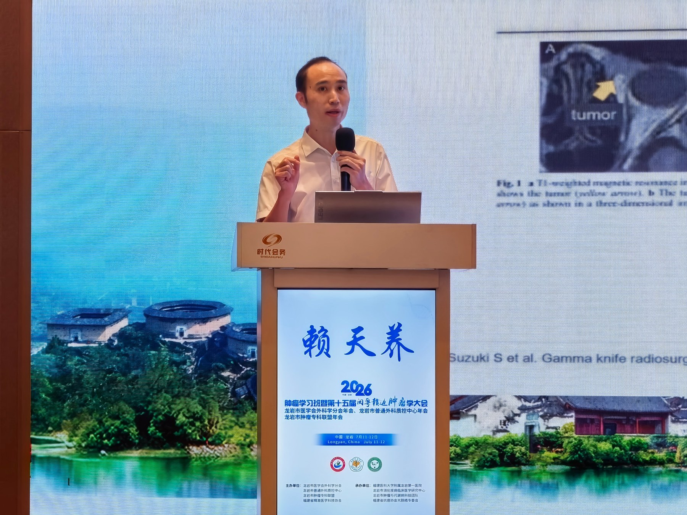
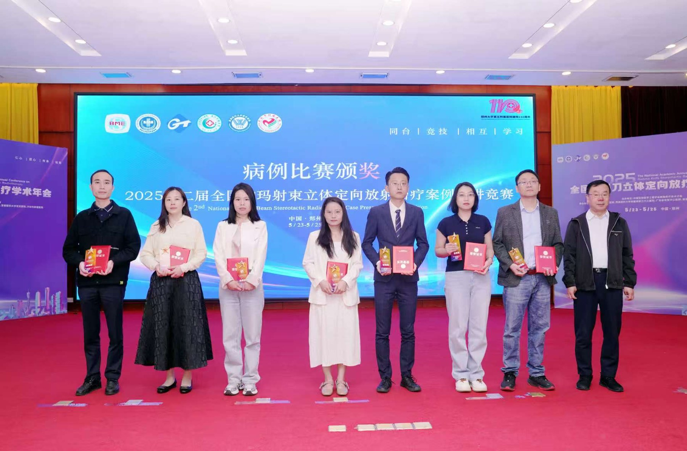
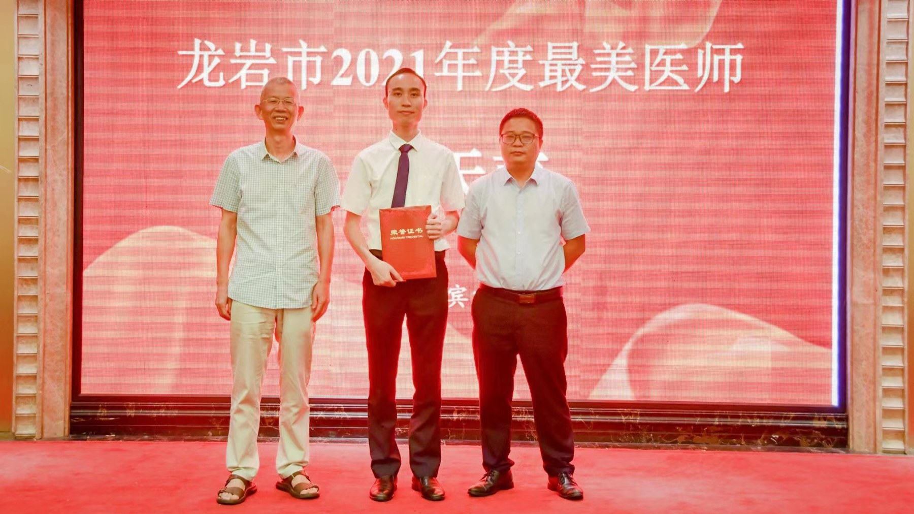

福建省龙岩市精准放疗公益科普与学术交流平台，聚焦放疗技术、患者教育、临床经验与科研成果。
内容兼顾通俗性与专业性，不能替代面诊和个体化治疗决策。
了解陀螺旋转式钴-60立体定向放射治疗系统的原理、适应证与治疗特点。
认识 SRS、SRT 与全脑放疗的差异和临床选择逻辑。
介绍根治性放疗、同步放化疗、SBRT 与姑息放疗。
主治医师｜龙岩博爱医院肿瘤放化疗科主任

重点关注第五代伽玛刀、SRS/SRT、脑转移瘤、肺癌精准放疗、肿瘤综合治疗及晚期姑息治疗；推进脑转移瘤剂量学、计划优化、质量控制与AI辅助放疗科研。
以时间轴方式持续归档专业成长与公益服务。


发布肿瘤放疗科普、学术动态和患者教育内容。扫描二维码关注。
首次出现采用完整规范名称，后续简称“陀螺刀”。
从病灶数量、大小、位置和整体病情理解治疗方案。
从初诊、定位、计划到治疗和随访的完整流程。